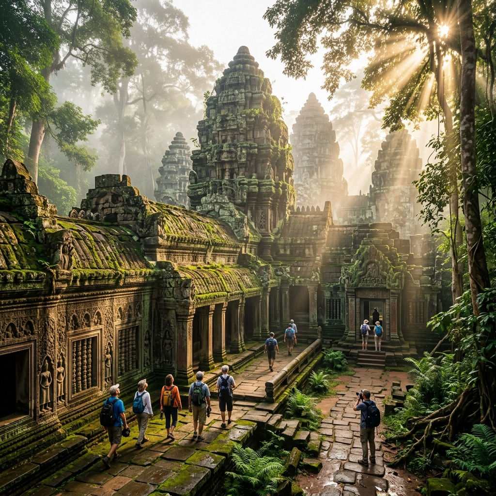

Discover stunning tourist locations in Ethiopia — from spectacular mountains to ancient cultural sites and pristine lakes.
A dramatic landscape of deep valleys and jagged mountain peaks, offering world-class trekking routes and encounters with the endemic Gelada baboons.
The source of the Blue Nile and the largest lake in Ethiopia, famous for its ancient island monasteries dating back centuries.
A culturally diverse region known for its indigenous tribes, unique traditions, and pristine natural landscapes along the Omo River.

🏛️ Cultural SiteA UNESCO World Heritage Site featuring 11 medieval monolithic cave churches carved out of solid rock in the 12th century.
One of the hottest and lowest places on Earth, featuring neon-colored sulfuric springs, salt flats, and active volcanoes.
A popular resort lake with brown, mineral-rich waters and sandy beaches, uniquely free of bilharzia and safe for swimming.
A vast high-altitude plateau and forest, home to the rare Ethiopian wolf, mountain nyala, and incredible endemic bird species.
A fortress-city of royal castles and palaces built by emperors in the 17th century, often referred to as the Camelot of Africa.
One of the most spectacular and extensive underground cave systems in the world, carved by the Weyib River.
A prominent mountain in eastern Ethiopia known for its rich biodiversity, indigenous forests, and stunning panoramic views.